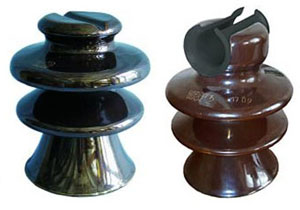
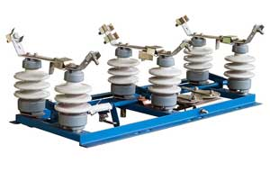

ТЭФИ — Тверской электро-фарфоровый изолятор - применяется для изготовления разъединителей электросети типа РЛНД и аналогов, также применяется для изолированного монтажа высоковольтных проводов на опоры линий электропередач.
Фарфоровые изоляторы служат для изоляции высоковольтных проводов от конструкций опор линий электропередач или разъединителей наружней установки. Фарфоровые изоляторы являются более эффективными по сравнению с аналогами из стекла или полимера. Имеют высокую степень защиты от утечек тока и колосальный срок службы.
Фарфоровые изоляторы делятся на штыревые опорные и опорно стержневые. Первые применяются при монтаже линий электропередач, вторые при изготовлении различных установок, например, разъединителей наружных установок РЛНД.
ООО "ТЭФИ" имеет собственные производственные мощности по изготовлению фарфоровых изоляторов любой сложности. Мы гарантируем качество нашей продукции и готовы сотрудничать с любыми торговыми или монтажными организациями. Вы можете ознакомится с нашими оптовыми ценами здесь.

Разъединитель РЛНД — контактный агрегат, предназначенный для коммутации электрической цепи без тока или с незначительным током, который для обеспечения безопасности имеет в отключенном положении изоляционный промежуток.
Разъединитель РЛНД состоит из подвижных и неподвижных контактов, укрепленных на изоляторах и снабжен механической блокировкой, предотвращающей включение заземлителей при включенном разъединителе и включение разъединителя при включенных заземлителях.
Разъединители РЛНД применяют в высоковольтных распределительных устройствах, для обеспечения безопасности при осмотровых и ремонтных работах на отключенных участках.
Разъединители РЛНД также применяют для секционирования шин и переключения электрических линий с одной системы шин распределительного устройства на другую.
Разъединителями РЛНД допускается включать и отключать ток холостого хода трансформаторов и зарядный ток линий, токи нагрузки трансформаторов небольшой мощности, а также переключать электрические цепи под током при наличии замкнутой шунтирующей цепи.
Разъединители РЛНД используются для видимого отделения участка электрической сети на время ревизии или ремонта оборудования, для создания безопасных условий работы и отделения от смежных частей электрооборудования, находящихся под напряжением, для создания которых разъединители комплектуются блокировкой включенного (отключенного) положения и заземляющими ножами, исключающими подачу напряжения на выведенный в ремонт участок сети. Также разъединители применяются для переключения присоединений с одной системы шин на другую, в электроустановках с несколькими системами шин.
Мы производим и реализуем оптом и в розницу разъединители РЛНД. Завод находится в городе Старица Тверской области, сборочный цех и склады готовой продукции в городе Твери. Наши изделия поставляются по всей территории России, а так же в страны ближнего зарубежья. Приглашаем к сотрудничеству партнеров из любого региона Российской федерации.
г.Тверь, Борихино поле, д.2.
телефон +7 (4822) 44-31-41
Вячеслав 8-910-647-34-81
Елена 8-915-713-98-52
Сopyright © 2016-2020 РЛНД-69 г.Тверь. Все права защищены.